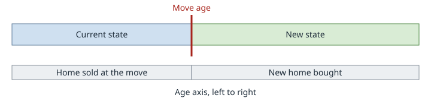

States: taxes, living costs and moving
Purpose: for anyone choosing a home state or planning a move; what the model knows about each state and what a move changes.
Where you live changes more than your income tax. Property tax, insurance, car costs, sales tax and gas differ by state and can add up to more than the income tax. You choose your state as the home state on Setup (see The app). Every state list in the app shows the 51 choices as code and name, such as NJ - New Jersey; type a few letters to narrow it. The tax rules are in Tax law in the model and Model rules by group.
Which states, and what each one holds
All 50 states and Washington, DC are supported. Each has its own law file, so correcting a state means editing one file (see The list of states). Each file holds:
Item |
What it means for you |
|---|---|
Income tax brackets |
The state’s rates, deductions and exemptions for each filing status. States with no wage tax have a single 0% bracket. |
Average local income tax |
County, city and school-district taxes averaged into one statewide rate and added to the state tax. A local tax that reaches wages only (as in Pennsylvania) is charged on pay alone; otherwise on the income the state taxes. |
Social Security, pensions and IRA withdrawals |
Whether the state taxes Social Security (not at all, the part the federal return taxes, or only above an income limit), and how much pension and IRA income it leaves out. |
Property tax |
An effective rate: the typical yearly tax as a share of the home’s value. |
Home and car insurance |
Typical yearly premiums for a home and for a car with full coverage. |
Car taxes |
Registration plus any yearly vehicle property tax for a typical car, and the sales tax on buying a car. |
Gas tax and pump price |
The state’s tax per gallon and the average price at the pump. |
Electricity |
The average home electricity price, in cents per kilowatt-hour. |
Typical home value |
What a typical home is worth, used to compare states fairly. |
Estate and inheritance tax |
The state’s estate tax (on what you leave) and inheritance tax (on what your beneficiaries receive), if it has either. |
Sales tax |
State and average local rates, the rate on groceries and whether clothing is taxed (see Sales tax). |
Health premiums |
Monthly list prices per person, without subsidies: the benchmark marketplace silver plan at 60, Medigap Plan G at 65, the average Part D plan and the average Medicare Advantage plan. A figure the research could not find is left empty. |
Price indexes |
Grocery, goods and services price levels with the US at 100. After a move they re-price your monthly expense rows (see Moving at retirement). |
Long-term care |
State median monthly costs of a home health aide, assisted living and a nursing home room. Stored for reference only; the model does not use them. |
How sure are the numbers? Every item carries a confidence label (confirmed primary,
confirmed secondary or unconfirmed) and every file a status (final or
estimate); Confidence chips and Status: final or estimate in How to read the law pages
define both. The table in The state law files gives each state’s status, its weakest
income-tax label and the rules that are approximated. The living-cost figures come from
secondary research (Tax Foundation, Census, insurer quote sites, Zillow). They are
averages, not quotes for your home or car.
Reading each state’s law. Every state has a page under Tax law by jurisdiction; the app’s See this state’s rules link opens it (see Documentation in The app).
Sales tax
Your expenses already include sales tax. The receipts you copy already have it in them, so WMTI does not add it again.
Which spending is taxed. Each row on the Expenses page is taxable or not taxable, and only taxable rows count:
A row you add yourself is taxable. Suggested rows have a default: goods (Household supplies, Electronics, Gifts) and services most states tax (Dining out, Cell plans, Subscriptions, Entertainment, Travel) are taxable; Prescriptions, Education, Life insurance and pure services (Personal care, Home repairs, Pets, Car repairs) are not.
Groceries follow the state’s own grocery rate, and Clothing follows its clothing rule (not taxed in states such as New Jersey, Pennsylvania and Minnesota).
The Home, Cars and Healthcare pages, rent and Charity rows never count.
To mark a row, set Taxable to Taxable or Not taxable (Default goes back). Mark a row of your own that is mostly labor (a cleaner, a tutor) Not taxable.
For each taxable row the tax inside it is amount x rate / (1 + rate), with the rate of the state you live in that year (combined state plus local, the grocery rate for Groceries, 0 for exempt Clothing).
Worked example. You spend 1,000 a month on taxable rows where the combined rate is 5%, and move to a state where it is 8%. The tax inside it now is 12,000 x 0.05 / 1.05, about 571 a year. After the move the same goods cost 12,000 x 1.08 / 1.05 = 12,343, about 343 a year more. Untaxed rows (rent, insurance, medicine) do not change.
Shown for records, never added. The Taxes chart and tables show the sales tax already inside your spending as a hatched bar and a last column labelled Sales tax (already in expenses, shown for records). Compare and the PDF report mark it the same way. It is never added to your total tax or any total.
Moving at retirement


A move to another state on the age axis.
The plan is the Relocation section of the Strategies tab: switch on Move to another state, pick the State you move to and set Move at your age. The move age shows your Social Security claim age until you type one (with no benefit, the age your pay stops, or now if you are retired); clearing it goes back to that age. Both of you move at the start of the move year and live in the new state for the whole year. With Relocation off, or the new state the same as your home state, nothing changes.
WMTI changes only what a move changes, by comparing the new state with the old one:
What changes |
How |
|---|---|
Income tax |
Your state tax and the average local tax use the new state’s rules, including its treatment of Social Security, pensions and IRA withdrawals. |
Your home |
See the next list. |
Car costs |
Car insurance is scaled by the states’ average premiums. Each car’s registration and car taxes become your entered amount plus the new state’s typical yearly figure less the old one’s, never below 0. A replacement car pays the new state’s car sales tax. |
Gas |
The gallons your car already uses cost the difference between the states’ average pump prices. |
Everyday prices |
Each monthly Expenses row (Bills, Planned Spending, Other Spending) follows the new state’s price level by its price type: Groceries the grocery index, goods rows the goods level, services rows the services level, and rows priced the same everywhere (subscriptions, travel, prescriptions, life insurance) do not change. A row you add yourself follows 40% goods and 60% services. Major Spending and Charity rows never change. Example: 800 a month of groceries in New Jersey (index 107.6) after a move to a state at 90 costs about 800 x 90 / 107.6 = 669. |
Sales tax |
Taxable rows the price levels do not re-price cost the new state’s sales tax
instead of the old: amount x (1 + new rate) / (1 + old rate). The price levels
already hold each state’s sales tax, so a re-priced row takes no separate
change. Both are charged together as |
Health premiums |
Before the Medicare age, the premium is scaled by the new state’s marketplace
premium at 60 over the old one’s. From the Medicare age, the supplement is scaled
by Medigap Plan G and Part D by the Part D premium. Medicare Part B and IRMAA are
federal and do not change. The change shows in the Summary column |
Estate and inheritance tax |
The state you live in at the end of the plan sets them, and by default your beneficiaries’ state too; a child’s beneficiary keeps the state you lived in when the child years ended. |
Any other cost |
A cost the old state’s file holds as 0 or leaves empty stays unchanged. |
Your home. The move adds a primary residence in the new state to your Home timeline, priced at your home’s value then times the new state’s typical home value over the old one’s. Your saved homes never change. Home follows me (on by default) sets what happens to the home you live in:
On: it is sold at the close of the year before the move, at its value then, with its selling costs. The mortgage is paid from the proceeds and the rest goes to your accounts. Its gain is taxed like any home sale, with the exclusion, by the state it sits in. A comparable home is bought in the new state at the start of the move year; its property tax and insurance scale with the states’ ratios. Your mortgage carries over (balance, rate, extra payment, months left). A sale within two years gets no exclusion.
Off: the old home is kept as a second home with its own value, costs and mortgage, taxed under its own state’s rules when sold (no home sale exclusion). The new home is financed like a new purchase (20% down over 360 months at your old rate) when the old home has a mortgage, else paid in cash.
Renting: the rent period you are in ends and a new one starts in the move year in the new state, at your rent times the new state’s housing-cost index over the old one’s. On and Off are the same here.
A home or rent period of yours that starts in the move year is the move: nothing is added (a blank state on it becomes the new state; another state you set wins, with a warning). With no home and no rent that year only the state moves.
What stays as you entered it. Salary, Social Security and pension, account balances and returns, entered spending (apart from the sales-tax difference), any second home, and any home or rent period starting after the move. Utility bills are not re-priced (see Limits and assumptions).
Moving through your homes. A primary residence you buy later, or a rent period that starts later, with its State set moves you to that state from its first year, with the same changes as above. A blank state keeps you where you were; a second home never moves you. Every cost is compared with your home state, so moving twice needs nothing more. Moves apply in year order; you live in one primary residence at a time.
Letting the optimizer compare states
The Optimize view (see Finding the best settings) has a States section, first in its list of options. Tick the states you would consider, up to 5 per search (the search reruns every strategy in each state, so more takes much longer).
It runs each one. Each ticked state is tried as a retirement move, alongside staying where you are, which is always a candidate. The state is searched first, then the other strategies are tuned inside it. Ticking only your own state does nothing.
More states, more time. The page shows what your ticked states add, for example 3 states and staying put: up to 672 more runs, up to 2 minutes more (estimate).
Later homes go with the state tried. Homes and rent periods that start at or after the move take the state tried; earlier ones keep theirs. Staying put restores your states.
The result names the best state, for example Retire in Florida, move at 65, or Stay in NJ, with its score beside your current settings. Applying it fills in the Relocation section for you.
Relocation is your own plan; the States section searches and reports which state scores best on after-tax money left for your beneficiaries. It does not value climate, family or healthcare access.
Why a no-income-tax state can cost more
For many retirees the state income tax is small: most states do not tax Social Security, and many leave out a large part of pension and IRA income. The costs that do not stop at retirement (property tax, insurance, gas, electricity, sales tax) can matter much more.
The table compares ten states for one example household: a married couple, both 65 or older, with 80,000 a year of income (40,000 Social Security and 40,000 pension and IRA), a home at the state’s typical value, one car driven 12,000 miles a year, 45,000 a year of taxable spending and average electricity use. Figures are thousands of dollars a year.
State |
Home value |
Income tax |
Property tax |
Home insurance |
Car insurance |
Gas |
Electricity |
Sales tax |
Total a year |
|---|---|---|---|---|---|---|---|---|---|
CA |
762k |
0.1 |
5.3 |
5.2 |
2.4 |
2.1 |
3.6 |
4.1 |
22.8k |
NJ |
575k |
0.0 |
9.6 |
2.3 |
3.1 |
1.5 |
2.6 |
3.0 |
22.2k |
FL |
375k |
0.0 |
2.9 |
8.0 |
2.8 |
1.5 |
1.7 |
3.1 |
20.0k |
NY |
525k |
0.0 |
6.4 |
2.4 |
2.6 |
1.5 |
3.2 |
3.8 |
20.0k |
TX |
296k |
0.0 |
3.7 |
4.6 |
2.4 |
1.4 |
1.7 |
3.7 |
17.6k |
WA |
588k |
0.0 |
4.3 |
2.7 |
2.2 |
2.0 |
1.6 |
4.3 |
17.1k |
NH |
511k |
0.0 |
6.9 |
2.0 |
1.0 |
1.6 |
2.9 |
0.0 |
14.4k |
NV |
441k |
0.0 |
2.2 |
1.9 |
3.1 |
1.9 |
1.5 |
3.7 |
14.3k |
TN |
331k |
0.0 |
1.5 |
3.4 |
1.6 |
1.5 |
1.5 |
4.3 |
13.8k |
PA |
287k |
0.0 |
3.3 |
1.2 |
1.9 |
1.6 |
2.3 |
2.9 |
13.2k |
Reading it. Florida, Texas and Washington have no income tax, yet each costs this household more than Pennsylvania, which does: Florida has the highest home insurance, Texas high property tax and insurance, Washington high home values and sales tax.
Note
Illustrative estimates from secondary research for one example household buying at the typical price; not quotes and not what WMTI shows for your plan. They leave out car taxes and senior property-tax relief and homestead caps (such as Florida’s Save Our Homes), which can cut property tax a lot for owners. A single filer, or more taxable income, pays more income tax in states such as California and New York. Run your own numbers.
How state law is structured, and adding a rule kind
A state’s file is read by code that names no state, and every number stays in the file. The files and what they hold are in The state law files and The list of states.
Limits and assumptions
Local income taxes are averages. A move within a state, or to a high-tax city such as New York City, is not captured exactly.
Some Social Security rules are approximated. A few states (for example Colorado, Minnesota, Montana, Utah and Vermont) have rules that do not fit the three patterns; they are flagged
unconfirmedin the state’s file.Insurance comes from one source. Quote sites disagree by 20 to 40%, so WMTI uses insurance averages only to compare states (as a ratio), never as your premium.
Utilities are not modeled. Electricity prices compare states, but your utility bills are not re-priced after a move.
Not modeled either: senior property-tax relief and homestead caps, part-year residence and marketplace premium subsidies. Tax law in the model lists what else the model leaves out.